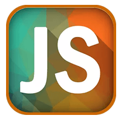
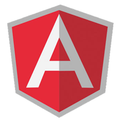
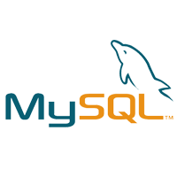

胜洪宇
外号：技术胖，80后屌丝程序猿、已婚、丰富Web前端开发经验
已跟程序作了9年好基友
-
9年前怀揣计算机天才梦的帅气少年超级小白
-
4年前热爱编程变得不修边幅项目组长
-
现在头发最终没战胜辐射和头油技术负责人
朴实无华的前端程序猿
胜洪宇，9年程序开发经验。
有在国内一线电商团队开发经历，现任百姓集团程序开发组长。
9年里一直在作电商网站，最早学的是J2EE(1年)，后来到团队改用PHP作后台代码开发(5年)，
随着前端程序岗位兴起，改做前端程序开发(3年)，对前端开发有浓烈的兴趣!!!
虽是默默无闻的程序猿，但也有当超级英雄的梦！

前端开发技能
-
 HTML+CSS3熟练度:95%学程序就开始用，已经用了9年，对新的HTML5+CSS不能说100%掌握
HTML+CSS3熟练度:95%学程序就开始用，已经用了9年，对新的HTML5+CSS不能说100%掌握 -
JavaScript熟练度:85%很早就开始使用，以前没有重视，随着nodejs的兴起开始重视，能独立写一些JavaScript插件。
-
 JQuery熟练度:90%比JavaScript用的还熟练，一些要求不高的项目使用起来得心应手。
JQuery熟练度:90%比JavaScript用的还熟练，一些要求不高的项目使用起来得心应手。 -
PhotoShop熟练度:60%软件的工具都会用，但不会设计东西，审美能力不行。在开发中只是有些切图或者抠透明背景时使用。
-
ReactJS熟练度:70%从ReactJS兴起，便开始学习，自己也作了几个小插件。但是没有真正的实际开发过项目，所以熟练度只有70%。还在刻苦学习中。
-
 Node.js熟练度:50%学习过一些视频教程，看了一本书，自己作过一些小服务，没有实际开发经验。
Node.js熟练度:50%学习过一些视频教程，看了一本书，自己作过一些小服务，没有实际开发经验。 -
AngularJS熟练度:50%跟开发小组做过一个项目，但是项目做完性能不行，导致项目失败。 第二次用了原生JavaSript开发，没有出现性能问题。
-
Gulp熟练度:80%前端自动化的东西，使用了1年多了。可以根据需要配置不同的自动化方案。
-
Grunt熟练度:70%在使用gulp之前一直使用grunt，感觉没gulp好用，就换成gulp了。
-
Less熟练度:90%这个不用说，前端CSS开发必备，基本满级。但是由于原CSS习惯，所以写的时候不习惯。
后端开发技能
-
 PHP熟练度:90%作了5年的PHP，所以说基本的开发都掌握，在服务器环境搭建是短板。 但最近3年转前端后没有用过。
PHP熟练度:90%作了5年的PHP，所以说基本的开发都掌握，在服务器环境搭建是短板。 但最近3年转前端后没有用过。 -
MySQL熟练度:85%掌握各种SQL语句的写法，开发中一直使用。
-
SQLServer熟练度:75%没有MySql用的多，但是开发中的操作是没问题。
-
ThinkPHP熟练度:80%国产的PHP开发框架，在五年的开发里，有60%的开发用到了此框架。
-
CodeIgniter熟练度:80%很好用的PHP开发框架，有多次项目开发经验。
-
3285天项目实战磨练 技术心智慢慢成熟
-
800+页Web制作经历 踩坑无数 不断成长
-
6+3年6年全栈3年前台 配合更加默契
重点项目
-
京东页面开发组-实习2006年培训完J2EE的去京东实习。 在五个月里学到了很多东西，配合小组 制作了7期活动专题页面。
-
百姓电子通讯系统使用了J2EE技术。 降低沟通成本，通讯录为基础的 OA系统。系统在 内部使用了3年。
-
百姓OA系统百姓量贩内部使用的OA系统，使用了PHP技术。 开发时间6个月，更换了老的电子通讯系统，目前 仍在使用。
-
百姓添添网担任项目组长，集团的电商网站，使用了PHP技术。 开发时间6个月，运营了4年，访问量每天3万IP。
超简单工作经历
除了在京东实习过五个月外，都在百姓集团工作。
从一个硬件维护员，到程序员，到项目组长，到现在的
项目负责人。看着公司从200多人的企业做到了6000多人，
从年营业额千万，到现在年营业额10亿以上。
百姓是很好的一家公司，多次在我生活困难时伸出援助之手。
我非常感恩百姓集团。